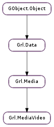

| static | new() |
| add_director(director) | |
| add_performer(performer) | |
| add_producer(producer) | |
| add_url_data(url, mime, framerate, width, height) | |
| get_director() | |
| get_director_nth(index) | |
| get_episode() | |
| get_framerate() | |
| get_height() | |
| get_original_title() | |
| get_performer() | |
| get_performer_nth(index) | |
| get_producer() | |
| get_producer_nth(index) | |
| get_season() | |
| get_show() | |
| get_url_data(framerate, width, height) | |
| get_url_data_nth(index, framerate, width, height) | |
| get_width() | |
| set_director(director) | |
| set_episode(episode) | |
| set_framerate(framerate) | |
| set_height(height) | |
| set_original_title(original_title) | |
| set_performer(performer) | |
| set_producer(producer) | |
| set_season(season) | |
| set_show(show) | |
| set_size(width, height) | |
| set_url_data(url, mime, framerate, width, height) | |
| set_width(width) |
None
None
Bases: Grl.Media
| Returns: | a newly-allocated data video. |
|---|---|
| Return type: | Grl.Media |
Creates a new data video object.
| Parameters: | director (str) – director of the movie |
|---|
Adds the director of the movie.
| Parameters: | performer (str) – an actor performing in the movie |
|---|
Adds the actor performing in the movie.
| Parameters: | producer (str) – producer of the movie |
|---|
Adds the producer of the movie.
| Parameters: |
|---|
Sets all the keys related with the URL of a media resource and adds it to video (useful for resources with more than one URL).
| Parameters: | index (int) – element to retrieve |
|---|---|
| Returns: | the director of the movie (owned by video ). |
| Return type: | str |
| Returns: | the framerate of the video |
|---|---|
| Return type: | float |
| Returns: | the original, untranslated title of the movie (owned by video ). |
|---|---|
| Return type: | str |
| Parameters: | index (int) – element to retrieve |
|---|---|
| Returns: | the actor performing in the movie (owned by video ). |
| Return type: | str |
| Parameters: | index (int) – element to retrieve |
|---|---|
| Returns: | the producer of the movie (owned by video ). |
| Return type: | str |
| Parameters: | |
|---|---|
| Returns: | all the keys related with the URL of a video resource in one go. |
| Return type: |
| Parameters: | |
|---|---|
| Returns: | all the keys related with the URL number index of a video resource in one go. |
| Return type: |
| Parameters: | director (str) – director of the movie |
|---|
Sets the director of the movie.
| Parameters: | episode (int) – the video’s episode |
|---|
Sets the episode number of the video
| Parameters: | framerate (float) – the video’s framerate |
|---|
Set the framerate of the video
| Parameters: | original_title (str) – original, untranslated title of the movie |
|---|
Sets the original, untranslated title of the movie.
| Parameters: | performer (str) – an actor performing in the movie |
|---|
Sets the actor performing in the movie.
| Parameters: | producer (str) – producer of the movie |
|---|
Sets the producer of the movie.
| Parameters: | season (int) – the video’s season |
|---|
Sets the season number of the video
| Parameters: |
|---|
Set the width and the height of the video
| Parameters: |
|---|
Sets all the keys related with the URL of a video resource in one go.